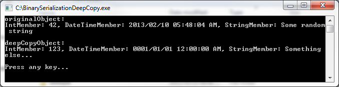

This article illustrates how to create deep copies of an object by making use of binary serialization implemented in the form of an extension method with generic type support.
Update 2013/02/23: I've posted a new article detailing how to create a deep copy of an object using the NetDataContractSerializer class: http://code.msdn.microsoft.com/Deep-Copy-NetDataContractSe-c57abdc0
There are no special requirements or instructions to building the sample code.
When creating a copy of an object in memory, the type of copy can be described as either a shallow copy or a deep copy. The Object class defines the MemberwiseClone method, which performs a bit by bit copy of an object’s value type members. In the case of reference type members the MemberwiseClone method will create a copy of the reference, but not a copy of the object being referenced. Creating a copy of an object using the MemberwiseClone method will thus result in copies and the original object still referencing the same member object in memory when that object is a reference type. The MemberwiseClone method performs a shallow copy when invoked.
A deep copy of an object results in copies and the original object not referencing the same reference type member object in memory.
The sample source code provided with this article provides a user defined data type, the CustomDataType class of which the code snippet is listed below.
[Serializable]
public class CustomDataType
{
private int intMember = 0;
public int IntMember
{
get { return intMember; }
set { intMember = value; }
}
private string stringMember = String.Empty;
public string StringMember
{
get { return stringMember; }
set { stringMember = value; }
}
private DateTime dateTimeMember = DateTime.MinValue;
public DateTime DateTimeMember
{
get { return dateTimeMember; }
set { dateTimeMember = value; }
}
public override string ToString()
{
return "IntMember: " + IntMember + ",
DateTimeMember: " + DateTimeMember.ToString() + ", StringMember: " + stringMember;
}
}
[Serializable] public class CustomDataType { private int intMember = 0; public int IntMember { get { return intMember; } set { intMember = value; } } private string stringMember = String.Empty; public string StringMember { get { return stringMember; } set { stringMember = value; } } private DateTime dateTimeMember = DateTime.MinValue; public DateTime DateTimeMember { get { return dateTimeMember; } set { dateTimeMember = value; } } public override string ToString() { return "IntMember: " + IntMember + ", DateTimeMember: " + DateTimeMember.ToString() + ", StringMember: " + stringMember; } }
Notice that the CustomDataType class definition is marked with the Serializable attribute. Objects of which the type definition is not marked with the Serializable attribute cannot be serialized. Trying to perform serialization on objects not marked as Serializable will result in an exception being thrown.
Extension method architecture enables developers to create methods which, from a syntactic and implementation point of view appear to be part of an existing data type. Extension methods create the perception of being updates or additions, literarily extending a data type as the name implies. Extension methods do not require access to the source code of the particular types being extended, nor does the implementation thereof require recompilation of the referenced types.
This article illustrates a combined implementation of extension methods extending the functionality of generic types. The following code snippet provides the extension method definition.
public static T DeepCopy<T>(this T objectToCopy)
{
MemoryStream memoryStream = new MemoryStream();
BinaryFormatter binaryFormatter = new BinaryFormatter();
binaryFormatter.Serialize(memoryStream, objectToCopy);
memoryStream.Position = 0;
T returnValue = (T)binaryFormatter.Deserialize(memoryStream);
memoryStream.Close();
memoryStream.Dispose();
return returnValue;
}
public static T DeepCopy<T>(this T objectToCopy) { MemoryStream memoryStream = new MemoryStream(); BinaryFormatter binaryFormatter = new BinaryFormatter(); binaryFormatter.Serialize(memoryStream, objectToCopy); memoryStream.Position = 0; T returnValue = (T)binaryFormatter.Deserialize(memoryStream); memoryStream.Close(); memoryStream.Dispose(); return returnValue; }
The DeepCopy method is defined as an extension method by virtue of being a static method of a static class and by specifying the this keyword in its parameter definition.
DeepCopy additionally defines the generic type <T> which determines the return value’s type and the type of the parameter objectToCopy.
The method body creates an instance of a MemoryStream object and an object instance of type BinaryFormatter. When BinaryFormatter.Serialize is invoked the byte representation of the objectToCopy parameter is written to the specified MemoryStream. In a similar fashion BinaryFormatter.Deserialize is invoked next, reading the byte representation from the specified MemoryStream. The object returned is cast to the same type as the object originally serialized.
The DeepCopy method illustrated above appears as a member method to the CustomDataType class created earlier.
static void Main(string[] args)
{
CustomDataType originalObject = new CustomDataType();
originalObject.DateTimeMember = DateTime.Now;
originalObject.IntMember = 42;
originalObject.StringMember = "Some random string";
CustomDataType deepCopyObject = originalObject.DeepCopy();
deepCopyObject.DateTimeMember = DateTime.MinValue;
deepCopyObject.IntMember = 123;
deepCopyObject.StringMember = "Something else...";
Console.WriteLine("originalObject: ");
Console.WriteLine(originalObject.ToString());
Console.WriteLine();
Console.WriteLine("deepCopyObject: ");
Console.WriteLine(deepCopyObject.ToString());
Console.WriteLine();
Console.WriteLine("Press any key...");
Console.ReadKey();
}
static void Main(string[] args) { CustomDataType originalObject = new CustomDataType(); originalObject.DateTimeMember = DateTime.Now; originalObject.IntMember = 42; originalObject.StringMember = "Some random string"; CustomDataType deepCopyObject = originalObject.DeepCopy(); deepCopyObject.DateTimeMember = DateTime.MinValue; deepCopyObject.IntMember = 123; deepCopyObject.StringMember = "Something else..."; Console.WriteLine("originalObject: "); Console.WriteLine(originalObject.ToString()); Console.WriteLine(); Console.WriteLine("deepCopyObject: "); Console.WriteLine(deepCopyObject.ToString()); Console.WriteLine(); Console.WriteLine("Press any key..."); Console.ReadKey(); }
The code snippet listed above is a console application which implements the DeepCopy extension method on objects of type CustomDataType. Modifying the member properties of the second object instance will not result in the first object instance properties being modified.

Please remember to rate this article, also feel free to post any questions you might have - Dewald Esterhuizen
This is article is based on an article originally posted on my blog: http://softwarebydefault.com/2013/02/10/deep-copy-generics/